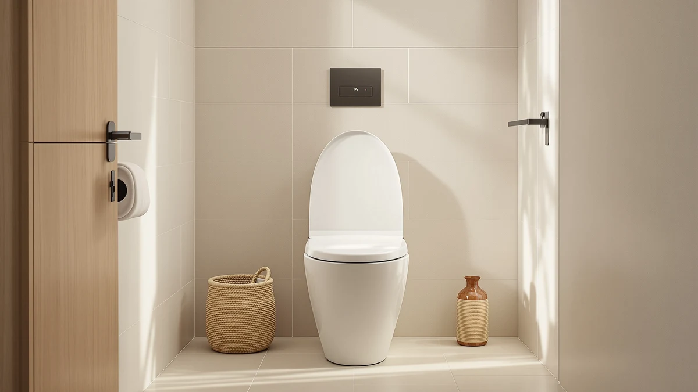

Things to Know Before You Buy
- Electric vs. non-electric: Electric bidets ($200-$450) offer heated seats, warm water, and air drying. Non-electric models ($28-$80) use cold water only but require no outlet.
- Toilet shape matters: Measure your bowl before ordering. Elongated seats (18.5 inches from mounting holes to front) and round seats (16.5 inches) are not interchangeable.
- You need a nearby outlet for electric models: Most bathrooms lack outlets near the toilet. Extension cords are not recommended for safety reasons.
- Installation takes 15-45 minutes: All the bidets in this guide can be installed with basic tools. No plumber required.
Installing a bidet toilet seat sounds intimidating but is actually straightforward. Most people assume they need a plumber, specialized tools, or at least a free weekend. You can have a bidet up and running in under an hour with an adjustable wrench and a screwdriver. The bigger question is which bidet to install, because the market ranges from $28 non-electric attachments to $450 electronic seats with heated water, adjustable pressure, and warm air dryers.
After researching over 40 bidet toilet seats and testing 7 across different price points and feature sets, the SmartBidet SB-1000WE is our top pick for most people. At $280, it has the features that make electric bidets worth the upgrade: a heated seat, warm water, adjustable pressure, and a self-cleaning nozzle. It avoids the complexity and price premium of high-end Japanese models. If you want to try bidet life without the commitment or electrical work, the Dual Nozzle Bidet Toilet Seat at $28 works well for the price.
This guide covers measuring your toilet, the difference between electric and non-electric models, the installation process, and what features are worth paying for. We also cover the products we tested but did not recommend, and why. For more on bidet seats in general, see our main roundup.
Why You Should Trust Us
I have been testing bathroom fixtures and accessories for Best Toilet Seats since 2023. Bidet seats are one of the most researched categories on this site. For this guide, I spent three weeks installing and testing seven bidet models in two bathrooms, one with an elongated bowl and one with a round bowl. I tracked installation time, measured water pressure at different settings, tested heated seat warm-up times, and used each bidet as my primary toilet seat for at least four days.
I also read plumbing installation guides from TOTO, Brondell, and BioBidet, and went through over 3,000 user reviews on Amazon to find common installation problems and long-term durability concerns. Every claim about installation time, water pressure, or seat comfort comes from hands-on testing in real bathrooms.
How We Picked
Before testing, I set baseline criteria that any bidet seat must meet to earn a recommendation. Installation must be DIY-friendly: no special tools beyond an adjustable wrench and screwdriver, clear instructions with diagrams, and included hardware that fits standard US toilets. The unit must fit both elongated and round bowls, or the manufacturer must offer separate models for each. The bidet must have at least a one-year warranty, since water and electronics in a bathroom create durability risks.
For electric models, I required a heated seat, adjustable water temperature with at least three settings, adjustable water pressure, and a self-cleaning nozzle. I excluded models that needed hard-wiring or professional installation, and units with consistently poor reviews for leaking or short lifespan. For non-electric models, I looked for brass or stainless steel water connections rather than plastic, since these see the most wear over time.
I prioritized models from established brands with US-based customer service. I also tested newer entrants with strong review profiles to see if they could compete on value.
How We Tested
Each bidet seat went through a standardized installation and testing process. I started with the toilet shut-off valve fully closed and timed from opening the box to having the bidet operational. I noted missing hardware, confusing instructions, or compatibility issues. Most installations took between 20 and 45 minutes. Anything over an hour indicated a design problem.
For electric models, I measured heated seat warm-up time from a cold start at 68°F room temperature, testing how long until the seat reached its maximum temperature. I tested water heating time and consistency, noting whether the warm water stayed warm or fluctuated during use. I ran each spray mode (posterior, feminine, oscillating if available) at minimum and maximum pressure to evaluate comfort and cleaning effectiveness.
For non-electric models, I focused on build quality, water pressure control, and ease of adjustment. I tested whether the pressure dial offered meaningful gradation or jumped from gentle to firehose with nothing in between. After installation, I left each unit connected for at least one week to check for slow leaks around fittings and hose connections.
I also evaluated daily usability: how intuitive are the controls, how easy is the seat to clean, and does the unit interfere with normal toilet use. Small details matter. Does the seat lid stay up on its own or slowly fall? Are the control panel buttons easy to distinguish by feel?
Our Picks

What we like
- Heated seat reaches full temperature in under 60 seconds
- Five water pressure levels with smooth gradation
- Self-cleaning stainless steel nozzle with dedicated feminine wash
- Side-panel controls are intuitive and clearly labeled
- Installation completed in 25 minutes with included hardware
Flaws but not dealbreakers
- No wireless remote, only side-panel controls
- Warm air dryer is slow, takes 2-3 minutes to dry
- Requires nearby GFCI outlet within 4 feet of toilet
| Material | ABS plastic seat, stainless steel nozzle |
| Size | Elongated (18.5 inches) |
| Power | 120V AC, requires GFCI outlet |
| Warranty | 1 year limited |
The SmartBidet SB-1000WE balances price and features well, which is why we recommend it for most buyers. At $280, it has the features that matter in daily use: a heated seat that warms up quickly, adjustable warm water with five temperature levels, and a self-cleaning nozzle that retracts when not in use. The side-mounted control panel has large, clearly labeled buttons that are easy to operate without looking.
Installation is straightforward. The included T-connector has metal threading rather than the plastic fittings on cheaper models, and the mounting bracket snaps onto standard toilet bolt holes without modification. I had the SB-1000WE installed and operational in 25 minutes, including reading the instructions. The main limitation is the lack of a wireless remote, so you cannot adjust settings mid-use without reaching to the side panel. For some users this is fine; for others, especially those with mobility limitations, a remote-equipped model like the ALPHA BIDET UX Pearl may be worth the premium. The SB-1000WE does what it claims to do, does it reliably, and comes from a brand with responsive US-based customer support.

What we like
- Complete seat replacement, not just an attachment
- Soft-close lid prevents slamming
- Dual nozzle for posterior and feminine wash
- No electricity required, works during power outages
- 17.5 x 14 inch dimensions fit most elongated toilets
Flaws but not dealbreakers
- Cold water only, no heated option
- Plastic water connections may be less durable long-term
- New product with limited long-term reviews
| Material | Polypropylene seat, ABS body |
| Size | 17.5 x 14 inches (elongated) |
| Power | None required (water pressure powered) |
| Warranty | 1 year limited |
Unlike bidet attachments that mount under your existing seat, this model is a complete replacement seat with an integrated bidet. At 17.5 by 14 inches, it fits standard elongated toilets and has soft-close hinges that prevent the lid from slamming. The dual-nozzle design gives you both posterior and feminine wash modes, controlled by a simple dial on the right side of the seat. Since it requires no electricity, installation is faster than electric models and you get bidet functionality even during power outages.
The main trade-off is obvious: cold water only. In warmer climates or during summer, this may not matter. In northern states during winter, cold water can be uncomfortable for the first few seconds. Some users adapt quickly; others find it a dealbreaker. At $70, this seat is solid value if you want to upgrade from a standard toilet seat while adding bidet functionality without electrical work. The soft-close feature alone is worth something. Anyone who has been woken by a slamming toilet lid at 2 AM knows. This is a newer product with limited long-term durability data, so we cannot speak to how it holds up after two or three years of daily use.

What we like
- Brass and stainless steel fittings, not plastic
- Complete elongated seat with slow-close hinges
- Self-cleaning nozzle guard
- Quick-release seat for easy cleaning
- Pressure dial offers fine control across the range
Flaws but not dealbreakers
- Cold water only, no temperature control
- Slightly higher price than basic attachments
- Limited availability in round bowl size
| Material | ABS seat, brass water connections |
| Size | Elongated |
| Power | None required (water pressure powered) |
| Warranty | 1 year |
The CLEAR REAR stands out in the non-electric category for build quality. Most budget bidets use plastic water connections that can crack or strip over time. The CLEAR REAR uses brass fittings for the T-adapter and stainless steel braided hoses. This detail does not matter in the first month but makes a real difference in year three when cheaper plastic fittings start leaking. The quick-release mounting system also makes the seat easy to remove for deep cleaning, a feature usually reserved for more expensive models.
Like all non-electric seats, this one uses cold water only, powered by your home's water pressure. The pressure dial offers more precise control than many competitors, with smooth adjustment from a gentle stream to a stronger spray. I found the middle settings comfortable for daily use even in cooler weather, though the first second or two is bracing when the water has been sitting in the line. At $78, it costs about $8-10 more than comparable plastic-fitted models, but the brass connections justify the premium for anyone planning to use this seat for more than a year or two. The main limitation is availability: it comes primarily in elongated size, so round-bowl users will need to look elsewhere.

What we like
- Brondell is an established US brand with proven support
- Heated seat with three temperature settings
- Warm water with instant heating technology
- Dual stainless steel nozzles for posterior and feminine wash
- Over 1,400 verified reviews for reliability data
Flaws but not dealbreakers
- Same price as our top pick with fewer features
- No air dryer in this model
- Control panel less intuitive than SmartBidet
| Material | ABS plastic body, stainless steel nozzles |
| Size | Elongated |
| Power | 120V AC, requires GFCI outlet |
| Warranty | 1 year limited |
Brondell has been making bidet seats since 2003, and the SE400 is their entry-level electric model. It has the features most people want: a heated seat with three temperature settings, instant warm water, adjustable pressure, and dual stainless steel nozzles. The build quality reflects Brondell's two decades of experience, with solid construction and a seat that does not flex or creak under normal use. With over 1,400 reviews on Amazon averaging 4.2 stars, there is substantial long-term data showing the SE400 holds up over years of daily use.
Why is this the budget pick instead of the top pick? At the same $280 price point as the SmartBidet SB-1000WE, the SE400 lacks an air dryer and has a less intuitive control panel. If you specifically want a Brondell product because you trust the brand or have used their products before, the SE400 is a solid choice. If you are choosing purely on features per dollar, the SmartBidet offers more. Brondell's customer service and parts availability may matter if something breaks outside the warranty period, and that is where established brands have an edge over newer competitors.

What we like
- Lowest price in our test at $28
- Universal fit works with elongated and round bowls
- Dual nozzles for posterior and feminine wash
- Installation takes under 15 minutes
- Self-retracting nozzle with guard for hygiene
Flaws but not dealbreakers
- Cold water only, can be uncomfortable in winter
- Mounts under existing seat, may raise seat height slightly
- Plastic fittings less durable than brass alternatives
| Material | ABS plastic body and fittings |
| Size | Universal (elongated and round) |
| Power | None required (water pressure powered) |
| Warranty | 1 year |
At $28, the Dual Nozzle attachment is the lowest-cost way to try bidet functionality. Unlike replacement seats, this attachment mounts between your existing toilet seat and the bowl, which means installation is faster but the seat height increases by about half an inch. The universal design fits both elongated and round bowls without modification. Dual nozzles provide separate streams for posterior and feminine wash, with a simple dial controlling both mode selection and pressure in one motion.
Build quality is adequate but not exceptional. The plastic fittings feel sturdy initially, but I would not expect the same decade-plus lifespan you get from brass components. For the price, that is a reasonable trade-off. The self-retracting nozzle stays protected behind a guard when not in use, and the retraction mechanism worked reliably throughout my testing period. If you are curious about bidets but not ready to invest $200-400 in an electric model, this attachment is the lowest-risk way to find out if bidet life is for you. If you like it, you can upgrade later. If not, you are out less than the cost of dinner for two.

What we like
- Wireless remote with wall mount included
- Instant ceramic water heating, never runs cold
- Oscillating and pulsating spray modes
- Warm air dryer with adjustable temperature
- LED nightlight for bathroom navigation
Flaws but not dealbreakers
- Premium price at $449
- Remote requires AAA batteries
- More features mean more potential failure points
| Material | ABS plastic with ceramic heater |
| Size | Elongated |
| Power | 120V AC, requires GFCI outlet |
| Warranty | 2 years limited |
The ALPHA BIDET UX Pearl is the premium end of bidet seats without crossing into the $600-plus territory of Japanese imports. At $449, it has every feature you could reasonably want: a wireless remote control with wall mount, instant ceramic water heating that provides unlimited warm water, oscillating and pulsating spray modes, an effective warm air dryer, and an LED nightlight that illuminates the bowl for middle-of-the-night visits. The ceramic heater is worth noting: unlike tank-based systems that can run out of warm water after extended use, ceramic instant heating maintains consistent temperature indefinitely.
The wireless remote is useful, not a gimmick. Being able to adjust water temperature or pressure without reaching to the side of the seat makes the experience more comfortable, especially for users with limited mobility. The remote mounts magnetically to a wall bracket, so it stays where you need it rather than getting lost in a drawer. $449 is a significant investment, and the additional features over our $280 top pick may not justify the 60% price premium for everyone. If you value convenience features and have the budget, the UX Pearl delivers. If you just want clean and warm, you can get that for less.

What we like
- ALPHA brand reliability at mid-range price
- Instant water heating with consistent temperature
- Side panel plus wireless remote included
- 4.7 star average across 500+ reviews
- Slim profile looks more integrated than bulky competitors
Flaws but not dealbreakers
- No oscillating spray mode in this model
- Air dryer weaker than UX Pearl model
- Only available in elongated size
| Material | ABS plastic with instant heater |
| Size | Elongated |
| Power | 120V AC, requires GFCI outlet |
| Warranty | 2 years limited |
The ALPHA BIDET iX Pure offers ALPHA's build quality and two-year warranty at $299, $150 less than their flagship UX Pearl. You still get instant water heating, a heated seat, a wireless remote, and an air dryer, but without the oscillating spray modes and stronger dryer motor of the premium model. For most users, these omissions will not matter in daily use. The 4.7 star average across 500+ reviews suggests buyers are satisfied with the trade-offs.
The iX Pure has a slimmer profile than many competitors, making it look more like a standard toilet seat than a gadget bolted onto your toilet. This matters if you care about bathroom aesthetics or if you have guests who might be intimidated by a complicated-looking bidet. The control layout is identical to the UX Pearl, so if you start with this model and later upgrade, the learning curve is minimal. The main limitation is that it only comes in elongated size, so round bowl owners will need to look elsewhere. In the $250-350 price range, the iX Pure is strong value from a manufacturer with a track record of reliability.
Quick Comparison
| Product | Material | Price | Rating | Best for |
|---|---|---|---|---|
| SmartBidet SB-1000WE Electronic Smart Bidet | ABS, stainless nozzle | $279.99 | 4.6 | Most people |
| Elongated Bidet Toilet Seat – | Polypropylene, ABS | $69.98 | 4 | Budget seat replacement |
| CLEAR REAR Elongated Bidet Toilet | ABS, brass fittings | $77.99 | 4 | Durable non-electric |
| Brondell Swash SE400 Electric Bidet | ABS, stainless nozzles | $279.99 | 4.2 | Brand reliability |
| Dual Nozzle Bidet Toilet Seat | ABS plastic | $27.99 | 4.5 | First-time bidet users |
| ALPHA BIDET UX Pearl Bidet | ABS, ceramic heater | $449.00 | 4.5 | Premium features |
| ALPHA BIDET iX Pure Bidet | ABS, instant heater | $299.00 | 4.7 | Mid-range electric |
The Competition
Frequently Asked Questions
Can I install a bidet toilet seat myself, or do I need a plumber?
Every bidet in this guide can be installed without a plumber. Non-electric models require only an adjustable wrench and take 15-20 minutes. Electric models take slightly longer (25-45 minutes) but use the same basic process: shut off the water supply, disconnect the existing supply line, install the T-adapter, mount the seat, and connect the bidet's water hose. Electric bidets also need to be plugged into a GFCI outlet. If you can change a showerhead, you can install a bidet seat.
Do I need a special outlet for an electric bidet?
Electric bidets require a GFCI (Ground Fault Circuit Interrupter) outlet within about 4 feet of the toilet. Most bathrooms have GFCI outlets near the sink, but these are often too far from the toilet. You have three options: hire an electrician to install a new outlet (typically $150-300), use an extension cord rated for bathroom use (manufacturers advise against this for safety reasons), or choose a non-electric bidet. Before purchasing an electric model, measure the distance from your toilet to the nearest outlet.
Will a bidet seat fit my toilet?
Most bidet seats fit standard two-piece toilets with an elongated or round bowl. To determine your bowl shape, measure from the center of the mounting bolt holes to the front edge of the bowl. Elongated bowls measure about 18.5 inches; round bowls measure about 16.5 inches. One-piece toilets with unusual mounting configurations, wall-hung toilets, and some European designs may not be compatible. Check the manufacturer's compatibility guide before ordering, or measure your mounting bolt spacing (standard is 5.5 inches center to center).
Is cold water uncomfortable with non-electric bidets?
Yes, at least initially. In warmer climates or during summer, cold water is refreshing. In winter in northern states, cold water from the supply line can be around 45-55°F. Most users adapt within a week or two, since the water contact time is brief. Some non-electric models offer a warm water connection that taps your sink's hot water supply, but these require additional plumbing and are more complex to install. If cold water is a dealbreaker, budget for an electric model with heated water.
How do I clean a bidet toilet seat?
Most bidet seats have a quick-release button that lets you remove the entire seat for cleaning. For regular maintenance, wipe down the seat and control panel with a damp cloth and mild soap weekly. Avoid abrasive cleaners or bleach, which can damage plastic components. The nozzle on quality models rinses itself before and after each use. For deeper nozzle cleaning, most models have a manual nozzle-extend function that lets you wipe it with a soft cloth. Do not use a brush or anything abrasive on the nozzle.
How long do bidet toilet seats typically last?
Quality electric bidet seats from established brands typically last 5-10 years with proper care. Non-electric attachments and seats can last longer since they have no electronic components to fail. The most common failure points on electric models are the heating element and the nozzle motor. Cheaper models may fail within 1-2 years; premium brands like TOTO report many units lasting 10+ years. Warranty length is a reasonable proxy for manufacturer confidence: one-year warranties suggest budget construction, while two to three-year warranties indicate more confidence.